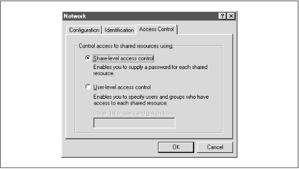
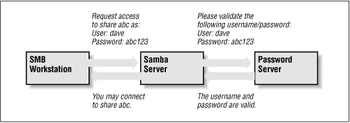

Using Samba
Robert Eckstein, David Collier-Brown, Peter Kelly1st Edition November 1999
1-56592-449-5, Order Number: 4495
416 pages, $34.95
|
|
|
|
|
Using SambaRobert Eckstein, David Collier-Brown, Peter Kelly1st Edition November 1999 1-56592-449-5, Order Number: 4495 416 pages, $34.95 |
6.3 Authentication Security
At this point, we should discuss how Samba authenticates users. Each user who attempts to connect to a share that does not allow guest access must provide a password to make a successful connection. What Samba does with that password - and consequently the strategy Samba will use to handle user authentication - is the arena of the
securityconfiguration option. There are currently four security levels that Samba supports on its network: share, user, server, and domain.
- Share-level security
Each share in the workgroup has one or more passwords associated with it. Anyone who knows a valid password for the share can access it.
- User-level security
Each share in the workgroup is configured to allow access from certain users. With each initial tree connection, the Samba server verifies users and their passwords to allow them access to the share.
- Server-level security
This is the same as user-level security, except that the Samba server uses a separate SMB server to validate users and their passwords before granting access to the share.
- Domain-level security
Samba becomes a member of a Windows domain and uses the domain's primary domain controller (PDC) to perform authentication. Once authenticated, the user is given a special token that allows him or her access to any share with appropriate access rights. With this token, the PDC will not have to revalidate the user's password each time he or she attempts to access another share within the domain.
Each of these security policies can be implemented with the global
securityoption, as shown in Table 6.3.
Table 6.3: Security Option Option
Parameters
Function
Default
Scope
security
domain,server,share, oruserIndicates the type of security that the Samba server will use.
user(Samba 2.0) orshare(Samba 1.9)Global
6.3.1 Share-level Security
With share-level security, each share has one or more passwords associated with it. This differs from the other modes of security in that there are no restrictions as to whom can access a share, as long as that individual knows the correct password. Shares often have multiple passwords. For example, one password may grant read-only access, while another may grant read-write access, and so on. Security is maintained as long as unauthorized users do not discover the password for a share to which they shouldn't have access.
OS/2 and Window 95/98 both support share-level security on their resources. You can set up share-level security with Windows 95/98 by first enabling share-level security using the Access Control tab of the Network Control Panel dialog. Then select the Share-level Access Control radio button (which deselects the user-level access control radio button), as shown in Figure 6.1, and press the OK button.
Figure 6.1: Selecting share-level security on a Windows machine
Next, right click on a resource - such as a hard drive or a CD-ROM - and select the Properties menu item. This will bring up the Resource Properties dialog box. Select the Sharing tab at the top of the dialog box and enable the resource as Shared As. From here, you can configure how the shared resource will appear to individual users, as well as assigning whether the resource will appear as read-only, read-write, or a mix, depending on the password that is supplied.
You might be thinking that this security model is not a good fit for Samba - and you would be right. In fact, if you set the
security=shareoption in the Samba configuration file, Samba will still reuse the username/passwords combinations in the system password files to authenticate access. More precisely, Samba will take the following steps when a client requests a connection using share-level security:
When a connection is requested, Samba will accept the password and (if sent) the username of the client.
If the share is
guestonly, the user is immediately granted access to the share with the rights of the user specified by theguestaccountparameter; no password checking is performed.For other shares, Samba appends the username to a list of users who are allowed access to the share. It then attempts to validate the password given in association with that username. If successful, Samba grants the user access to the share with the rights assigned to that user. The user will not need to authenticate again unless a
revalidate=yesoption has been set inside the share.If the authentication is unsuccessful, Samba will attempt to validate the password against the list of users it has previously compiled throughout the attempted connections, as well as any specified under the share in the configuration file. If the password does not match any usernames (as specified in the system password file, typically /etc/passwd ), the user is not granted access to the share under that username.
However, if the share has a
guestokorpublicoption set, the user will default to access with the rights of the user specified by theguestaccountoption.You can indicate in the configuration file which users should be initially placed on the share-level security user list by using the
usernameconfiguration option, as shown below:[global] security = share [accounting1] path = /home/samba/accounting1 guest ok = no writable = yes username = davecb, pkelly, andyoHere, when a user attempts to connect to a share, Samba will verify the password that was sent against each of the users in its own list, in addition to the passwords of users
davecb,pkelly, andandyo. If any of the passwords match, the connection will be verified and the user will be allowed. Otherwise, connection to the specific share will fail.6.3.1.1 Share Level Security Options
Table 6.4 shows the options typically associated with share-level security.
Table 6.4: Share-Level Access Options Option
Parameters
Function
Default
Scope
only userboolean
Indicates whether usernames specified by
usernamewill be the only ones allowed.
noShare
username(user or users)string (list of usernames)
Specifies a list of users against which a client's password will be tested.
None
Share
6.3.1.2 only user
This boolean option indicates whether Samba will allow connections to a share using share-level security based solely on the individuals specified in the
usernameoption, instead of those users compiled on Samba's internal list. The default value for this option isno. You can override it per share as follows:[global] security = share [data] username = andy, peter, valerie only user = yes6.3.1.3 username
This option presents a list of users against which Samba will test a connection password to allow access. It is typically used with clients that have share-level security to allow connections to a particular service based solely on a qualifying password - in this case, one that matches a password set up for a specific user:
[global] security = share [data] username = andy, peter, terryWe recommend against using this option unless you are implementing a Samba server with share-level security.
6.3.2 User-level Security
The preferred mode of security with Samba is user-level security. With this method, each share is assigned specific users that can access it. When a user requests a connection to a share, Samba authenticates by validating the given username and password with the authorized users in the configuration file and the passwords in the password database of the Samba server. As mentioned earlier in the chapter, one way to isolate which users are allowed access to a specific share is by using the
validusersoption for each share:[global] security = user [accounting1] writable = yes valid users = bob, joe, sandyEach of the users listed will be allowed to connect to the share if the password provided matches the password stored in the system password database on the server. Once the initial authentication succeeds, the user will not need to re-enter a password again to access that share unless the
revalidate=yesoption has been set.Passwords can be sent to the Samba server in either an encrypted or a non-encrypted format. If you have both types of systems on your network, you should ensure that the passwords represented by each user are stored both in a traditional account database and Samba's encrypted password database. This way, authorized users can gain access to their shares from any type of client.[ 1] However, we recommend that you move your system to encrypted passwords and abandon non-encrypted passwords if security is an issue. The Section 6.4" section of this chapter explains how to use encrypted as well as non-encrypted passwords.
[1] Having both encrypted and non-encrypted password clients on your network is another reason why Samba allows you to include (or not include) various options in the Samba configuration file based on the client operating system or machine name variables.
6.3.3 Server-level Security
Server-level security is similar to user-level security. However, with server-level security, Samba delegates password authentication to another SMB password server, typically another Samba server or a Windows NT Server acting as a PDC on the network. Note that Samba still maintains its list of shares and their configuration in its smb.conf file. When a client attempts to make a connection to a particular share, Samba validates that the user is indeed authorized to connect to the share. Samba will then attempt to validate the password by contacting the SMB password server through a known protocol and presenting the username and password to the SMB password server. If the password is accepted, a session will be established with the client. See Figure 6.2 for an illustration of this setup.
Figure 6.2: A typical system setup using server level security
You can configure Samba to use a separate password server under server-level security with the use of the
passwordserverglobal configuration option, as follows:[global] security = server password server = PHOENIX120 HYDRA134Note that you can specify more than one machine as the target of the
passwordserver; Samba will move down the list of servers in the event that its first choice is unreachable. The servers identified by thepasswordserveroption are given as NetBIOS names, not their DNS names or equivalent IP addresses. Also, if any of the servers reject the given password, the connection will automatically fail - Samba will not attempt another server.One caveat: when using this option, you will still need an account representing that user on the regular Samba server. This is because the Unix operating system needs a username to perform various I/O operations. The preferable method of handling this is to give the user an account on the Samba server but disable the account's password by replacing it in the system password file (e.g., /etc/passwd ) with an asterisk (*).
6.3.4 Domain-level Security
Domain-level security is similar to server-level security. However, with domainlevel security, the Samba server is acting as a member of a Windows domain. Recall from Chapter 1 that each domain has a domain controller, which is usually a Windows NT server offering password authentication. Including these controllers provides the workgroup with a definitive password server. The domain controllers keep track of users and passwords in their own security authentication module (SAM), and authenticates each user when he or she first logs on and wishes to access another machine's shares.
As mentioned earlier in this chapter, Samba has a similar ability to offer user-level security, but this option is Unix-centric and assumes that the authentication occurs via Unix password files. If the Unix machine is part of a NIS or NIS+ domain, Samba will authenticate the users transparently against a shared password file, in typical Unix fashion. Samba then provides access to the NIS or NIS+ domain from Windows. There is, of course, no relationship between the NIS concept of a domain and the Windows concept of a domain.
With domain-level security, we now have the option of using the native NT mechanism. This has a number of advantages:
It provides far better integration with NT: there are fewer "kludges" in the smb.conf options dealing with domains than with most Windows features. This allows more extensive use of NT management tools, such as the User Manager for Domains tool allowing PC support individuals to treat Samba servers as if they were large NT machines.
With the better integration comes protocol and code cleanups, allowing the Samba team to track the evolving NT implementation. NT Service Pack 4 corrects several problems in the protocol, and Samba's better integration makes it easier to track and adapt to these changes.
There is less overhead on the PDC because there is one less permanent network connection between it and the Samba server. Unlike the protocol used by the
security=serveroption, the Samba server can make a Remote Procedure Call (RPC) call only when it needs authentication information. It can not keep a connection permanently up just for that.Finally, the NT domain authentication scheme returns the full set of user attributes, not just success or failure. The attributes include a longer, more network-oriented version of the Unix uid, NT groups, and other information. This includes:
The Samba developers used domain-level security in Samba version 2.0.4 to add and delete domain users on Samba servers semi-automatically. In addition, it adds room for other NT-like additions, such as supporting access control lists and changing permissions of files from the client.
The advantage to this approach is less administration; there is only one authentication database to keep synchronized. The only local administration required on the Samba server will be creating directories for users to work in and /etc/passwd entries to keep their UIDs and groups in.
6.3.4.1 Adding a Samba server to a Windows NT Domain
If you already have an NT domain, you can easily add a Samba server to it. First, you will need to stop the Samba daemons. Then, add the Samba server to the NT domain on the PDC using the "Windows NT Server Manager for Domains" tool. When it asks for the computer type, choose "Windows NT Workstation or Server," and give it the NetBIOS name of the Samba server. This creates the machine account on the NT server.
Next, generate a Microsoft-format machine password using the smbpasswd tool, which is explained in further detail in the next section. For example, if our domain is SIMPLE and the Windows NT PDC is
beowulf, we could use the following command on the Samba server to accomplish this:smbpasswd -j SIMPLE -r beowulfFinally, add the following options to the
[global]section of your smb.conf and restart the Samba daemons.[global] security = domain domain logins = yes workgroup = SIMPLE password server = beowulfSamba should now be configured for domain-level security. The
domainloginsoption is explained in more detail later in this chapter.
 |
 |
 |
| 6.2 Controlling Access to Shares |
 | 6.4 Passwords |
Back to: Using Samba
© 1999, O'Reilly & Associates, Inc.